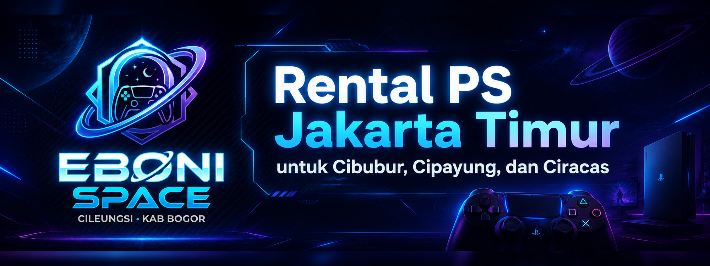

Rencana mabar lebih seru ketika konsol, stik, dan game sudah siap tanpa perlu membeli perangkat sendiri. Untuk pelanggan yang mencari rental PS Jakarta Timur, Eboni Space menyediakan pilihan sewa PS4 dan PS5 dari area Cileungsi. Layanan ini paling sesuai untuk Cibubur dan wilayah Jakarta Timur yang masih berada dalam koridor pengantaran yang memungkinkan.

Kirim pin lokasi, tanggal, jam mulai, pilihan unit, dan durasi sewa lewat WhatsApp. Admin akan mengecek stok unit, jadwal antar, serta ketentuan layanan untuk lokasi Anda.
Rental PS dari Cileungsi untuk Jakarta Timur terdekat
Eboni Space beroperasi dari kawasan Cileungsi. Karena posisi tersebut dekat dengan koridor Cibubur, layanan rental PS dapat dipertimbangkan untuk beberapa area Jakarta Timur yang berdekatan. Namun, pengantaran tidak otomatis tersedia untuk seluruh Jakarta Timur. Jarak, waktu permintaan, kondisi jadwal, serta stok unit tetap perlu dikonfirmasi oleh admin.
Model layanan seperti ini membuat proses booking lebih jelas. Pelanggan dapat memilih PS4 atau PS5, menentukan lama sewa, lalu mengirim lokasi. Setelah itu admin membantu mengecek apakah pengantaran dapat dijadwalkan dan perlengkapan apa yang paling sesuai untuk kebutuhan bermain di rumah.
Area Jakarta Timur yang dapat dicek
Fokus layanan berada pada Cibubur dan wilayah Jakarta Timur yang relatif dekat dari arah Cileungsi–Transyogi. Area berikut dapat ditanyakan kepada admin saat Anda membutuhkan rental PlayStation:
Daftar area tersebut bukan janji pengantaran otomatis. Tujuannya untuk membantu calon pelanggan mengetahui wilayah yang relevan untuk ditanyakan. Kirim lokasi lengkap atau pin agar admin dapat memberi jawaban yang sesuai kondisi saat booking.
Pilih PS4 atau PS5 sesuai kebutuhan
PS4 cocok untuk mabar santai bersama teman atau keluarga. Pilihan ini pas untuk game sepak bola, balapan, fighting, dan permainan multiplayer lain yang tersedia. PS5 dapat dipilih jika Anda ingin unit generasi lebih baru dan tersedia pada tanggal yang dibutuhkan.
Sebelum pesan, pertimbangkan jumlah pemain dan lama acara. Jika beberapa orang akan bermain bergantian, tanyakan jumlah stik yang tersedia. Bila belum ada layar di lokasi, sampaikan pula kebutuhan TV. Eboni Space menyediakan opsi TV 32 inci sesuai stok dan ketentuan sewa yang berlaku.
Kapan sewa PS cocok digunakan?
- Mabar akhir pekan bersama teman di rumah.
- Hiburan keluarga saat libur sekolah atau hari libur.
- Acara ulang tahun atau kumpul kecil di rumah.
- Game night dengan permainan sepak bola, balapan, atau fighting.
- Ingin mencoba bermain PS4 atau PS5 tanpa membeli konsol terlebih dahulu.
Cara cek pengantaran rental PS Jakarta Timur
Kirim lokasi dan jadwal
Kirim pin lokasi atau alamat area Jakarta Timur, lalu tulis tanggal serta jam mulai sewa yang Anda inginkan.
Pilih unit dan durasi
Tentukan PS4 atau PS5, lama sewa, dan kebutuhan TV tambahan bila belum ada layar di lokasi.
Tunggu konfirmasi admin
Admin mengecek stok, jangkauan pengantaran, jadwal, serta ketentuan biaya antar jika ada sebelum booking dikonfirmasi.
FAQ rental PS Jakarta Timur
Apakah Eboni Space melayani rental PS seluruh Jakarta Timur?
Pengantaran mengikuti jangkauan, jadwal, dan ketersediaan unit. Fokusnya adalah Cibubur serta area Jakarta Timur terdekat. Kirim pin lokasi untuk mendapatkan konfirmasi sebelum booking.
Apakah bisa antar rental PS ke Cipayung atau Ciracas?
Cipayung dan Ciracas dapat ditanyakan kepada admin. Ketersediaan pengantaran ditentukan berdasarkan lokasi lengkap, tanggal, jam, dan kondisi jadwal pada saat Anda menghubungi Eboni Space.
Apakah tersedia PS4 dan PS5?
Tersedia pilihan PS4 dan PS5 sesuai stok. Sebaiknya booking lebih awal untuk jadwal weekend, libur sekolah, atau hari libur.
Apakah TV sudah termasuk dalam paket rental PS?
TV 32 inci tersedia sebagai opsi tambahan sesuai ketersediaan dan ketentuan sewa. Informasikan kebutuhan TV sejak awal agar admin dapat menyesuaikan perlengkapan.
Bagaimana cara mengetahui biaya antar?
Kirim lokasi/pin dan detail booking kepada admin. Jika ada ketentuan biaya antar untuk area tertentu, admin akan menyampaikannya sebelum pesanan dikonfirmasi.